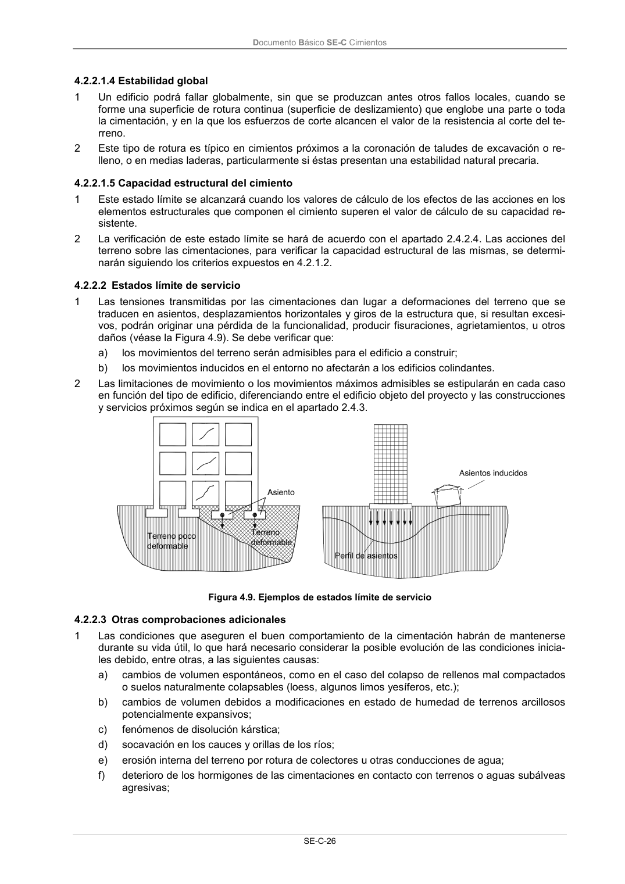

DB-SE-C Cimientos · edición 2019-12-20 · capa oficial
Documento DB-SE-C-oficial · SHA-256 del PDF a71133f4b0dca253e45ea3071c70f2a512354bcc5cd841bf89b1a502f567ac5e
Copia fiel del PDF fuente · Fuente oficial
Ficha de la disposición en la fuente oficial
Formatos: JSON del segmento · Markdown
4.2.2.2 Estados límite de servicio 1 Las tensiones transmitidas por las cimentaciones dan lugar a deformaciones del terreno que se traducen en asientos, desplazamientos horizontales y giros de la estructura que, si resultan excesi- vos, podrán originar una pérdida de la funcionalidad, producir fisuraciones, agrietamientos, u otros daños (véase la Figura 4.9). Se debe verificar que: a) los movimientos del terreno serán admisibles para el edificio a construir; b) los movimientos inducidos en el entorno no afectarán a los edificios colindantes. 2 Las limitaciones de movimiento o los movimientos máximos admisibles se estipularán en cada caso en función del tipo de edificio, diferenciando entre el edificio objeto del proyecto y las construcciones y servicios próximos según se indica en el apartado 2.4.3. Figura 4.9. Ejemplos de estados límite de servicio
